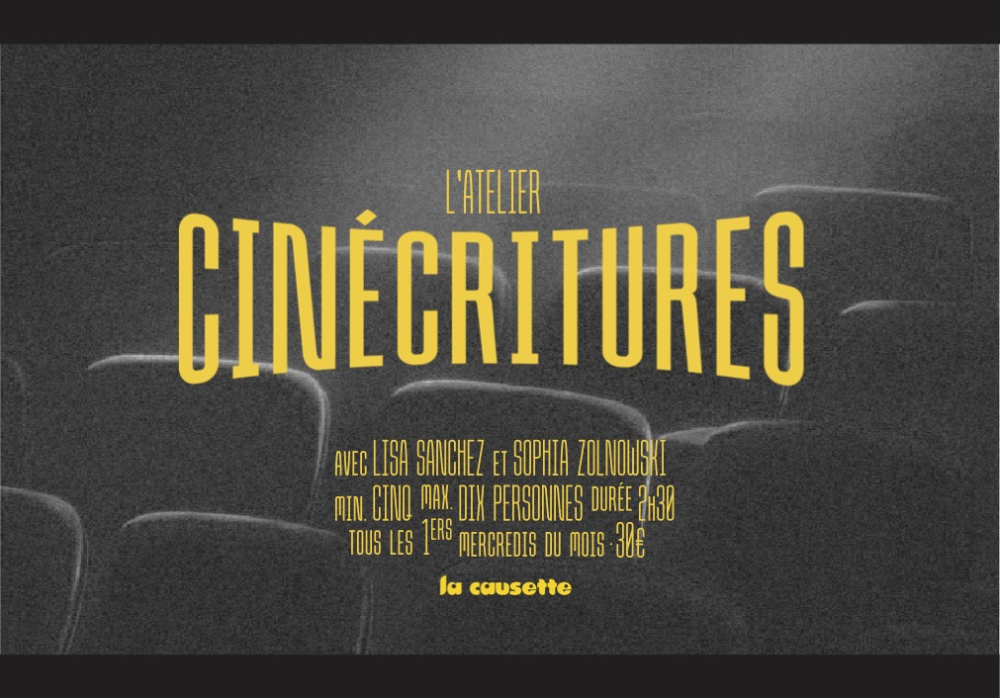

05

Cinécritures est un atelier d'exploration entre le verbe et l'image — une invitation à créer sans prérequis, que l'on soit amoureux·se des mots, des images ou plus largement de l'art. Né en marge de Cinérama, émission diffusée sur une quarantaine de radios locales en France (localement : RPH SUD et Divergence FM).
Né d'un amour commun pour le sensible, la poésie qu'elle soit dans les livres ou portée à l'écran, et de l'envie de partager nos regards. Une expérience par et pour le collectif.
Lisa Sanchez
Poétesse et écrivaine publiée, animatrice d'ateliers d'écriture. Elle a quitté le journalisme il y a cinq ans pour se consacrer à la création — pour elle et pour les autres.
Sophia Zolnowski
Formée à l'histoire de l'art et au cinéma, créatrice de récits audiovisuels, chroniqueuse cinéma pour l'émission Cinérama. Elle gravite autour de formes de création plurielles et embarque avec elle les autres.